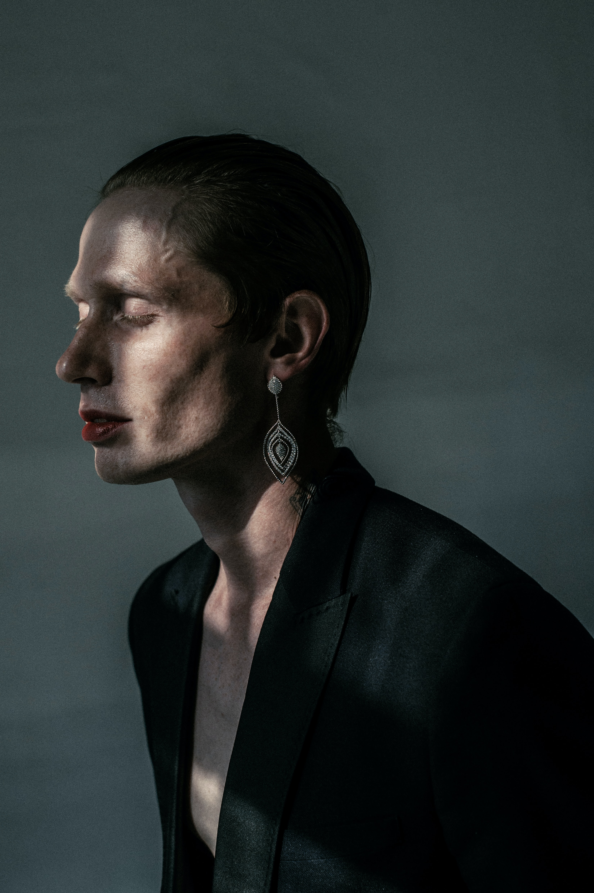

The ideal female archetype

BY ÅSA SIEURIN
FEATURED ARTICLE

Articles on the topic of:
Creative ProcessesBY ÅSA SIEURIN
Photographer & Stylist at OWOI
Articles on the topic of:
Creative ProcessesBY ÅSA SIEURIN
BY ÅSA SIEURIN
BY ÅSA SIEURIN